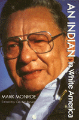

<body bgcolor="#FFFFFF" text="#000000" link="#0000FF" vlink="#CC0000" alink="#CC0000"><center><hr width="350" size="1" align="center" noshade>A Lakota Sioux overcomes personal struggles to help his community<hr width="350" size="1" align="center" noshade><p><a href="https://cdcshoppingcart.uchicago.edu/Cart/ChicagoBook.aspx?ISBN=9781566392341&&PRESS=temple" target="_top">Buy this book!</a> | <a href="https://cdcshoppingcart.uchicago.edu/Cart/Cart.aspx?PRESS=temple" target="_top">View Cart</a> | <a href="https://cdcshoppingcart.uchicago.edu/Cart/Cart.aspx?PRESS=temple" target="_top">Check Out</a></p><p></p></center><!--none//--><h1>An Indian in White America</h1>
<H2><!-- Afterword by Lincoln, Kenneth --></H2>
<h3>Mark Monroe, edited by Carolyn Reyer, afterword by Kenneth Lincoln</h3>
<P>cloth 1-56639-234-9 $69.95, Nov 94, <FONT COLOR=#990033>Out of Print</FONT>
<br>paper 1-56639-235-7 $28.95, Nov 94, <FONT COLOR=#990033>Out of Stock Unavailable</FONT>
<br>Electronic Book 1-43990-097-3 $29.95 <FONT COLOR=#990033>Out of Print</FONT>
<BR> 256 pp
6x9
14&nbsp;halftones
</P><BLOCKQUOTE><I>"At time when most Americans don't realize that over 66 percent of Indians live off the reservation, this book is a powerful witness ... it will reward the reader with an illuminating look into what it means to be a member of America's Native minority."</I>
<br>&#151<b><I>Kirkus Reviews</b></I><I></I></BLOCKQUOTE>
<p>Narrated with intense honesty, this autobiography of Mark Monroe, a Lakota Sioux Indian, is a story of courage, faith, and determination, and a rare opportunity to witness the life of a contemporary American Indian. Despite lifelong confrontations with violence, racism, and personal hardship&#151alcoholism, family deaths, illness, poverty, and unemployment&#151Mark Monroe has worked to instill ethnic pride in his fellow Indians.
<p>After an early idyllic childhood at the Rosebud South Dakota reservation, Monroe moved with his parents off-reservation to Alliance, Nebraska. There he first felt the sting of white America's racism from signs outside local businesses that read "No Indians or dogs allowed." As a young man, Monroe enlisted in the military, for the first time experiencing outside acceptance and learning vocational skills. Upon his return to the United States, he worked as a baker. At the same time, however, he was being sucked into a life of alcoholism, begun years earlier with social drinking. Eventually he was unable to eat or to work. After rehabilitation, he ran for Police Magistrate. Monroe was the first Indian ever to have filed for public office in Alliance, and his candidacy divided the town. Though he lost the election, he gained community support and a growing sense of dignity from the campaign.
<p>From the misery and hopelessness he suffered as an alcoholic, and the pains of recovery, Monroe became aware of the cultural difference between Indian alcoholism and white alcoholism. This understanding led to his work with Indian alcoholics at the Panhandle Mental Health Center in Scottsbluff, Nebraska&#151another first. No Indian had ever served on the Center's staff. Since his recovery, Monroe has been an active participant in his community and continues to fight for the legal rights of American Indians. In 1973 he founded the American Indian Council, which today offers a variety of health, educational, and social programs, including a nutrition program, a hospital busing program, and alcohol counseling.
<BR>&nbsp;<h2>Reviews</h2>
<p><I>"[An] interesting representation of Lakota male experiences in the realities of present-day life in the Great Plains."</I>
<br>&#151<b><I>Wicazo Sa Review</I></b>
<p><I>"Mark Monroe has broken out of society's cage and achieved outstanding things. We are all better off for it. His personality and stature&#151qualities of leadership, determination, and stamina&#151quickly override the poverty-stricken times and the tragic aspects that linger constantly at the edges of this Indian world, this seemingly desolate place. Compared with other Native
American biographies, </I>An Indian in White America<I> stands near the top."</I>
<br>&#151<b>Charles Ballard</b>, Institute of Ethnic Studies, University of Nebraska
<p><I>"I know of no other volume that deals so frankly with the familiar Indian problems of poverty, racism and alcoholism while offering, at the same time, the powerful example of one man's struggle out of those traps which still threaten Native people. Although Mark Monroe describes himself as 'just an </I>ikee wicasa<I>&#151a common man who's trying to provide for his family,' he provides us all with lessons for healing and survival. His autobiography is an uncommon gift."</I>
<br>&#151<b>Joseph Bruchac</b>, Editor, <I>Greenfield Press Review</I>
<BR>&nbsp;<P><p>Mark Monroe has been inscribed on to the Honor Wall of the Smithsonian's National Museum of the American Indian as a permanent tribute to his work and dedication.</P><BR>&nbsp;<br>
<h2>Contents</h2><P>
<p>Editor's Preface &#150 Carolyn Reyer
<br>Acknowledgments
<br>1. Childhood Memories: Wood, South Dakota
<br>2. Hard Times; Alliance, Nebraska
<br>3. A Second Gunner: Korea
<br>4. First Baker: A Trade and a Family
<br>5. An Alcoholic: Losing Everything
<br>6. A Treatment Failure: Fort Meade
<br>7. Sober Again: A New Life
<br>8. An Indian Candidate for Public Office
<br>9. Indigenous Mental Health Worker
<br>10. Community Organizer: Programs for Indians
<br>11. The American Indian Council: Speaking for Ourselves
<br>12. Loved Ones: Losses and Recoveries
<br>Afterword &#150 Kenneth Lincoln
</P><BR>&nbsp;<H2>About the Author(s)</H2>
<P><b>Mark Monroe</b> is currently Director of the American Indian Council, Inc., in Alliance. He formerly served as Vice President of the Nebraska Indian Commission and as President of United Indians of Nebraska. He and Carolyn Reyer have been friends since 1982.</P>
<P><b>Carolyn Reyer</b> is an Adjunct Professor in the Department of English and Women's Studies at West Virginia University, where she developed the Native American Visiting Professorship series and the Native American Literature Program. She is also the author of <I>Cante Ohitika: Images of Lakota Women on Pine Ridge</I>.</P>
<BR><H2>Subject Categories</H2>
<p><A HREF="/tempress/general.html" TARGET="_top">General Interest</a>
<BR><A HREF="/tempress/history.html" TARGET="_top">History</a>
<BR><A HREF="/tempress/race.html" TARGET="_top">Race and Ethnicity</a>
</p>
<p align="center"><a href="https://cdcshoppingcart.uchicago.edu/Cart/ChicagoBook.aspx?ISBN=9781566392341&&PRESS=temple" target="_top">Buy this book!</a> | <a href="https://cdcshoppingcart.uchicago.edu/Cart/Cart.aspx?PRESS=temple" target="_top">View Cart</a> | <a href="https://cdcshoppingcart.uchicago.edu/Cart/Cart.aspx?PRESS=temple" target="_top">Check Out</a></p><p><font face="Arial" size="1"><a href="copyright.html" onMouseOver="window.status='Web Copyright Policy';return true;" onMouseOut="window.status=''" title="Web Copyright Policy">&copy;</a> 2015 <a href="http://www.temple.edu" target="new" onMouseOver="window.status='Link to Temple University home page';return true;" onMouseOut="window.status=''" title="Link to Temple University home page">Temple University</a>. All Rights Reserved. http://www.temple.edu/tempress/titles/1144_reg.html</font></p>